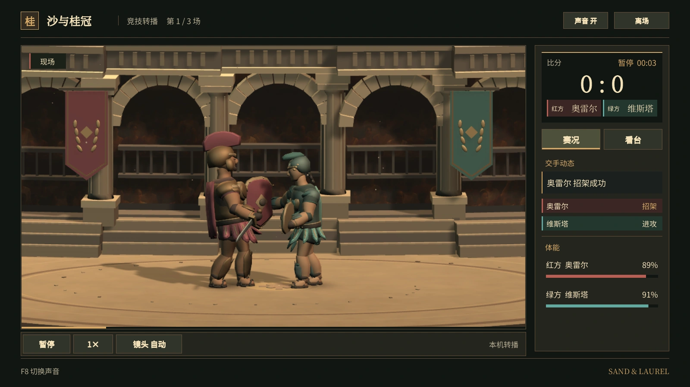
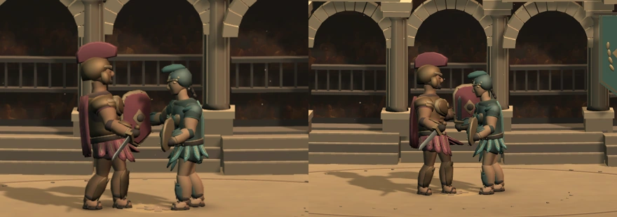

竞技模拟 / 对局观战
沙与桂冠.
在罗马竞技场看两名角斗士争夺优势。走位、盾面和命中反馈共同解释比分是怎么来的。
Unity · Windows 试玩版 0.3.8
从靠近、接战到退开
连续走位让两人间距的变化可见。部分回合在一次交锋后接短回击，发力、受击和回稳各有清楚的动作节奏。


让盾牌接触与比分对上
盾面朝向对手，兵器碰盾时在接触处给出声光反馈。远距离优势用「控场得分」说明，回放可重新观察交手过程。


竞技模拟 / 对局观战
在罗马竞技场看两名角斗士争夺优势。走位、盾面和命中反馈共同解释比分是怎么来的。
Unity · Windows 试玩版 0.3.8
连续走位让两人间距的变化可见。部分回合在一次交锋后接短回击，发力、受击和回稳各有清楚的动作节奏。

盾面朝向对手，兵器碰盾时在接触处给出声光反馈。远距离优势用「控场得分」说明，回放可重新观察交手过程。
